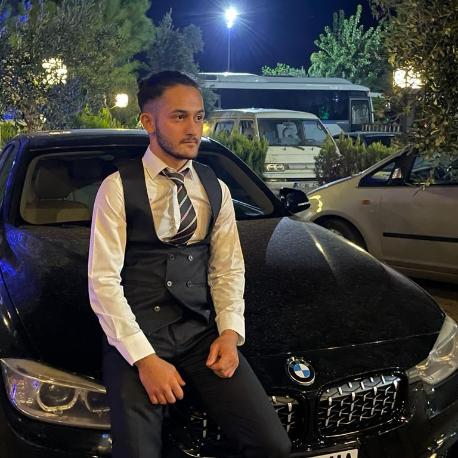

ANASAYFA
ILETISIM
GALERİ
Asil Nadir Akkuzu
Ben Asil Nadir Akkuzu. 02.01.2002 Akhisar doğumluyum. Manisa /Akhisar Namık oğul Anadolu lisesinden mezunum. Isparta yalvaç uygulamalı bilimler üniversitesinde üniversite hayatıma devam ediyorum. Teknolojiyle uğraşmayı seviyorum.
